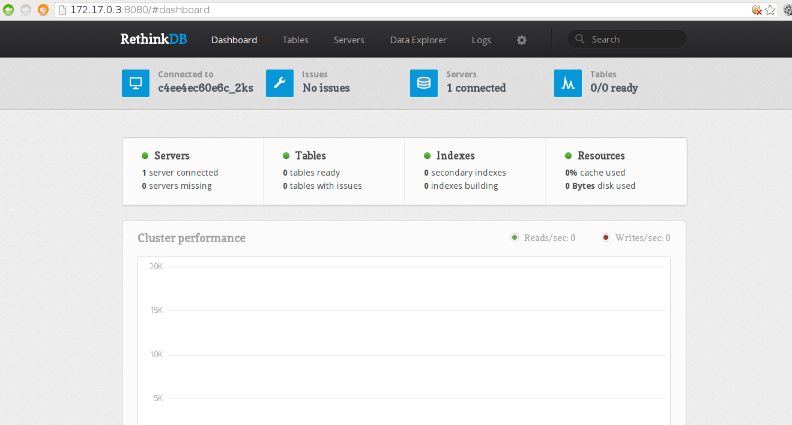

RethinkDB es una base de datos NoSQL, opensource, es una base de datos que almacena documentos en formato JSON, facilita la inserción, actualización y busqueda en tiempo real (más info en el sitio de rethinkDB y en wikipedia).
La idea es construir una imagen de Docker por medio de un archivo Dockerfile, tomando como base Debian Jessie. Aunque se puede usar directamente la imagen de RethinkDB que se encuentra en el hub de docker.
Los artículos anteriores sobre Docker son:
-
Iniciando Django con docker usando docker-compose con postgresql como microservicio.
-
Crear un entorno de Integración y Despligue continue con Docker para node.js.
-
Ejecutar una prueba de unittest en Python con un contenedor Docker.
-
Montar una Plataforma como servicio (PaaS) con Dokku (docker).
-
Instalar Jenkins por medio de Docker y crear una imagen Docker de Jenkins
-
Crear un contenedor Docker como entorno de desarrollo para Sails.js.
-
Correr aplicaciones de escritorio desde un contenedor Docker.
-
Usar dockerui para la gestión de imágenes y contenedores de Docker
El archivo Dockerfile toma parte del archivo oficial del sitio de RethinkDB, la idea es crear la imagen a partir de Debian Jessie (el dockerfile lo pueden ver en el siguiente enlace).
El archivo Dockerfile es el siguiente:
#Base de Debian Jessie
FROM debian
#Mantenedor
MAINTAINER Ernesto Crespo <ecrespo@gmail.com>
# instalar RethinkDB
RUN apt-get update
RUN apt-get install -y software-properties-common
RUN apt-get install -y wget
RUN sh -c 'echo "deb http://download.rethinkdb.com/apt `lsb_release -cs` main" | tee /etc/apt/sources.list.d/rethinkdb.list'
RUN sh -c 'wget -qO- https://download.rethinkdb.com/apt/pubkey.gpg | apt-key add -'
RUN apt-get update
RUN apt-get install -y rethinkdb
#Se define el volumen donde se almacena los datos
VOLUME ["/data"]
#Se define el directorio de trabajo
WORKDIR /data
#Se ejecuta rethinkdb asociando todas las interfaces existentes en el contenedor
CMD ["rethinkdb", "--bind", "all"]
# proceso, cluster webui
EXPOSE 28015 29015 8080
Para construir la imagen se ejecuta:
docker build -t debian-rethinkdb .
Y para correr el contenedor (se asocia el volumen /data al directorio donde se ejecuta el contenedor):
docker run --name some-rethink -v "$PWD:/data" -d debian-rethinkdb
Para ver la interfaz administrativa vía web de rethingDB se ejecuta (caso chromium):
chromium "http://$(docker inspect --format '{{ .NetworkSettings.IPAddress }}' some-rethink):8080"
A continuación se muestra una captura de pantalla de la aplicación web:

¡Haz tu donativo! Si te gustó el artículo puedes realizar un donativo con Bitcoin (BTC) usando la billetera digital de tu preferencia a la siguiente dirección: 17MtNybhdkA9GV3UNS6BTwPcuhjXoPrSzV
O Escaneando el código QR desde la billetera:

Comments !